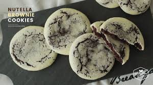

Nutella Brownie Cookies

Description
I love Cookies!!
Ingredients
Nutella dough:
- 150g Dark chocolate
- 40g Unsalted butter
- 1 Egg
- 55g Brown Sugar
- 1 pinch of Salt
- 50g Nutella
- 3g Vanilla extract
- 60g Plain flour
- 2g Baking powder
- 1g Baking soda
White dough:
- 75g Unsalted butter
- 55g Sugar
- 1 pinch of Salt
- 25g Egg
- 2g Vanilla extract
- 150g Cake flour
Steps
Nutella dough:
- Microwave dark chocolate and butter for about 30 seconds.
- Combine egg, brown sugar and salt. Then add the microwaved mixture. Mix in Nutella and vanilla extract
- Sift and mix in the flour, baking powder and baking soda. Refrigerate mixture for about 1 hour.
White dough:
- Gently loosen up the butter and mix in the sugar and salt. Then add the egg and vanilla extract
- Sift in the flour and mix. Refrigerate for about an hour.
Combine:
- Divide the white dough into 7g pieces and the Nutella dough into 10g pieces. Spread out the white Dough and wrap it around the Nutella dough.
- Preheat oven to 170°C.
- Place the dough balls on a backing tray and press them flat. Bake in the oven at 160°C for 12 minutes and let it cool.
- Enjoy!!